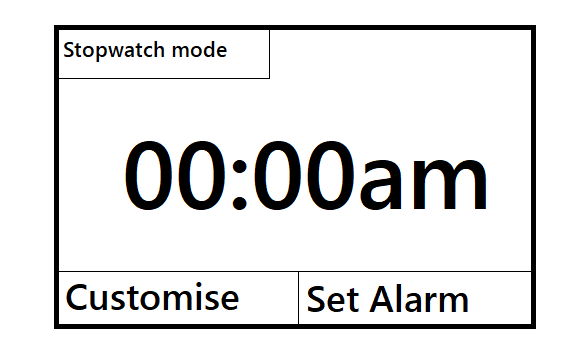
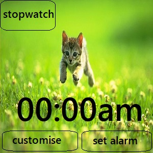
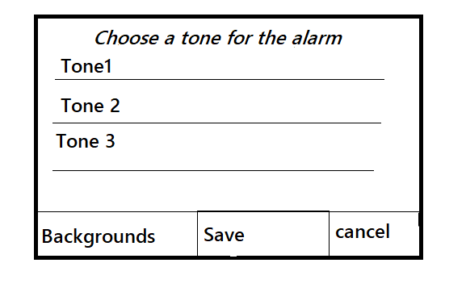
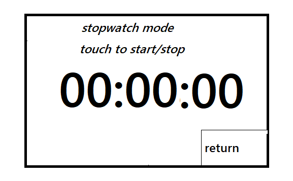

Group
Group Name: Nimble Navigators
Experience thus far
Experience thus far
In relation to previous experiences that we had, we as a team, were introduced to
many novelties that were apparent during the development of our project. Challenges we faced
were our shortage in skill sets, experience and knowledge in managing a smartwatch app. development
project. Here, a complication we encountered was developing the emulator. We initially attempted to
create this first without any writing in the application, however we discovered that further down in
the developing timeline we would run the risk of implementing something we don't need and/or not
implementing something we needed. Therefore, we had taken a step back and revisited our design as we
may possibly downscale our project, removing aspects of allowing users to directly input their music,
to a simpler design so that we are able to create a completed product that meets our project objectives
within the time frame given. We had intended to implement team project techniques, such as pair
programming (if be needed), to improve our productivity and efficiency.
Revised Estimates
| Living expenditure |
$400 per person per week = $36,000 |
| Training cost (software, facilities and tuition) |
$700 |
| Equipment cost/assets (computers, softwares, appliances, smartwatches) |
$5,800 |
| Real estate expenses |
Space rental - $10,000pa
Furniture - $2,500
|
| Public utilities and consumables |
$5,500 |
| Business Insurance |
$750 |
| Grand Total |
$61,250 |
Our estimated timetable for this project is:
23rd May - 12th August: 12 weeks - Finished system phase
13th August - 7th October: 8 weeks - Porting phase
Going Forward
Collectively we will periodically revisit our design, monitoring our progress level to
judge whether a downscale(or even perhaps an upscale) is needed for this project to accommodate
workload. Majority of the time, Thomas will mainly be coding and testing our emulator and
prototypes, where Allan and Benjaman will mainly be testing and writing the reports. During
this phase, we aim to practice the test-fix-test cycle effectively, finish our emulators and
prototypes, and to test it vigorously.
In our final phase (13th August - 7th October), porting, we will collectively attempt to port
our prototype on another emulator provided by teams that are similar to ours.
Design Notes
Here is a basic representation of our app. This is the main screen which displays
the clock and has touch navigation buttons to go to the stop watch component, the
customise component and the set alarm component of the app.

Here is what it looks like with an image which the user will be able to change. The with the included
we may need to change the location of the time as it might get in the way of the focus of the picture so each
picture may also alter the layout. Perhaps if we manage to allow the user to add their own images we could
allow them to freely move the location of the time.
This representation of the app also resembles the resolution of the watch.

This next screen is the interface for setting the alarm clock. It has plus and
minus buttons for both hours and minutes. It also has a cancel and a save and exit button.

This screen allows the user to choose a tone to play as the alarm. The user can switch to
a menu where they can select a background for the app too and a font and border design.

This image shows the stop watch portion of the app. The user can tap the screen anywhere
but the cancel button to start the stop watch. It will count up until the user touches
the screen again.

Emulator ideas
The emulator will have a 320 by 320 pixel screen to mirror the size of the smart watch. Clicking on
the screen will be like touching it on the watch. Each time the emulator is 'touched' it will send the
location of the touch (x and y coordinates) to the app. The app will manage what to do with this
information. The emulator will get information about the time from the browser and send it to the app.
The emulator will receive information from the app telling it what kind of graphical information to display
and what sounds to play.
The emulator will feature two buttons one will simply exit out of the app returning to the 'home page' of
the smart watch. The other could be used to perform the same function as some of the touch commmands such as
stopping and starting the stopwatch aspect or saving and exiting when setting the alarm.